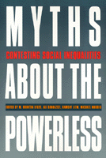

<body bgcolor="#FFFFFF" text="#000000" link="#0000FF" vlink="#CC0000" alink="#CC0000"><center><hr width="350" size="1" align="center" noshade>Exposing the assumptions about issues at the center of our national debate<hr width="350" size="1" align="center" noshade><p><a href="https://cdcshoppingcart.uchicago.edu/Cart/ChicagoBook.aspx?ISBN=9781566394215&&PRESS=temple" target="_top">Buy this book!</a> | <a href="https://cdcshoppingcart.uchicago.edu/Cart/Cart.aspx?PRESS=temple" target="_top">View Cart</a> | <a href="https://cdcshoppingcart.uchicago.edu/Cart/Cart.aspx?PRESS=temple" target="_top">Check Out</a></p><p></p></center><!--none//--><h1>Myths about the Powerless</h1>
<H2>Contesting Social Inequalities</H2>
<h3>edited by M. Brinton Lykes, Ali Banuazizi, Ramsay Liem and Michael Morris, foreword by George W. Albee</h3>
<P>cloth 1-56639-421-X $88.50, May 96, <FONT COLOR=#990033>Available</FONT>
<br>paper 1-56639-422-8 $35.95, May 96, <FONT COLOR=#990033>Available</FONT>
<br>Electronic Book 1-43990-142-2 $34.95 <FONT COLOR=#990033>Available</FONT>
<BR> 416 pp
6x9
2&nbsp;tables 3&nbsp;figures 1&nbsp;halftone
</P><p>This collection examines the realities of social inequality, providing critical analyses of contemporary issues at the center of national debate&#151homelessness, the underclass, poverty, welfare, unemployment, health and mental health care, and gender and intercultural relations. A scholar and life-long activist, William Ryan's notions of "blaming the victim" and "fair shares vs. fair play" provide potent jumping-off points for the contributors' insights into the struggle for equality and social justice in the 1990s. Their call to unmask the underlying assumptions that sustain inequality offers a compelling challenge to the neoconservative strategy that dominates public debate and legislative agendas.
<BR>&nbsp;<h2>Excerpt</h2><P>Excerpt available at <a href="http://www.temple.edu/tempress">www.temple.edu/tempress</a></p>
<BR>&nbsp;<h2>Contents</h2><P>
<p>Foreword &#150 George W. Albee
<br>Acknowledgments
<p><b>Part I: Introduction</b>
<p><b>Part II: Inequality, Poverty, and Social Policy</b>
<br>1. Equality, Morality, and the Health of Democracy &#150 S. M. Miller
<br>2. Culture, Structure, and the Underclass &#150 Michael Morris
<br>3. The Homeless Shelter and the Nineteenth-Century Poorhouse: Comparing Notes from Two Eras of "Indoor Relief" &#150 Dennis P. Culhane
<br>4. Welfare Reform and the New Class War &#150 Frances Fox Piven and Richard Cloward
<br>5. The So-Called Underclass and the Future of Anti-Poverty Policy &#150 Herbert J. Gans
<p><b>Part III: Beyond Victim Blaming: The Emergence of New Voices</b>
<br>6. Mental Health and Unemployment: The Making and Unmaking of Psychological Casualties &#150 Ramsay Liem and Joan Huser Liem
<br>7. Insisting on Innocence: Accounts of Accountability by Abusive Men &#150 Michelle Fine, Toni Genovese, Sarah Ingersoll, Pat Macpherson and Rosemarie Roberts
<br>8. Meaning Making in a Context of Genocide and Silencing &#150 M. Brinton Lykes
<br>9. Psychology, the Distant Other, and the Dialectics of Change in Non-Western Societies &#150 Ali Banuazizi
<p><b>Part IV: Revisiting the Crisis in Health and Mental Health</b>
<br>10. Choices and Chances: How a Profit-Driven Health Care System Discriminates against Middle-Aged Women &#150 Paula B. Doress-Worters
<br>11. Cancer and Poverty: Double Jeopardy for Women &#150 Jean V. Hardisty and Ellen Leopold
<br>12. The Challenges Facing Community Health Centers in the 1990s: A Voice from the Inner City &#150 Elizabeth Sparks
<br>13. Privatization and the Global Economy and Mental Health in Massachusetts &#150 Matthew P. Dumont
<p><b>Part V: Consciousness Raising, Action, and Community Change</b>
<br>14. Women's Abortion Experiences as Sources of Political Mobilization &#150 Abigail J. Stewart and Sharon Gold-Steinberg
<br>15. Rethinking Social Action and Community Empowerment: A Dialogue &#150 Bill Berkowitz and Tom Wolff
<br>16. Art as Community Narrative: A Resource for Social Change &#150 R. Elizabeth Thomas and Julian Rappaport
<br>17. Dismantling the Post-War Social Contract &#150 Sumner M. Rosen
<p><b>Part VI: A Conversation between William Ryan and M. Brinton Lykes</b>
<p>About the Contributors
<br>Author Index
<br>Subject Index
</P><BR>&nbsp;<H2>About the Author(s)</H2>
<P><B>M. Brinton Lykes </B>is Associate Professor of Psychology, Boston College School of Education, and the co-editor of <I>Gender and Personality: Current Perspectives on Theory and Research. </I></P>
<P><P><B>Ali Banuazizi </B>is Professor of Psychology at Boston College and the author of <I>The New Geopolitics of Central Asia. </I></P>
<P><B>Ramsay Liem </B>is Professor of Psychology at Boston College and the co-author of <I>Social Contexts of Health, Illness, and Patient Care. </I></P>
<P><P><B>Michael Morris </B>is Professor of Psychology at the University of New Haven and the co-author of <I>Poverty and Public Policy.</I></P>
<P>Contributors: S. M. Miller, Dennis P. Culhane, Frances Fox Piven, Richard Cloward, Herbert J. Gans, Joan Huser Liem, Michelle Fine, Toni Genovese, Garah Ingersoll, Pat Macpherson, Rosemarie Roberts, Paula B. Doress-Worters, Jean V. Hardisty, Ellen Leopold, Matthew P. Dumont, Abigail J. Stewart, Sharon God-Steinberg, Bill Berkowitz, Tom Wolff, R. Elizabeth Thomas, Julian Rappaport, Sumner M. Rosen.</P>
<BR><H2>Subject Categories</H2>
<p><A HREF="/tempress/psycho.html" TARGET="_top">Psychology</a>
</p>
<p align="center"><a href="https://cdcshoppingcart.uchicago.edu/Cart/ChicagoBook.aspx?ISBN=9781566394215&&PRESS=temple" target="_top">Buy this book!</a> | <a href="https://cdcshoppingcart.uchicago.edu/Cart/Cart.aspx?PRESS=temple" target="_top">View Cart</a> | <a href="https://cdcshoppingcart.uchicago.edu/Cart/Cart.aspx?PRESS=temple" target="_top">Check Out</a></p><p><font face="Arial" size="1"><a href="copyright.html" onMouseOver="window.status='Web Copyright Policy';return true;" onMouseOut="window.status=''" title="Web Copyright Policy">&copy;</a> 2015 <a href="http://www.temple.edu" target="new" onMouseOver="window.status='Link to Temple University home page';return true;" onMouseOut="window.status=''" title="Link to Temple University home page">Temple University</a>. All Rights Reserved. http://www.temple.edu/tempress/titles/1074_reg.html</font></p>